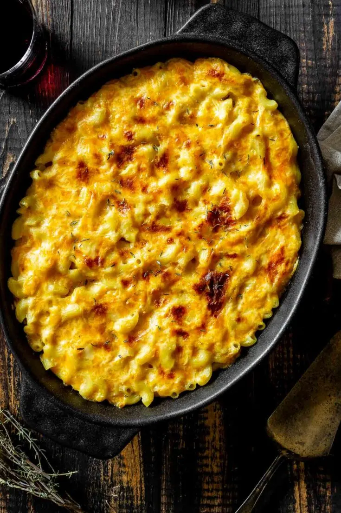

Smoked Mac and Cheese!

This mac and cheese is like no other. SMokey and creamy, this will change the way you look at this simple dish forever!
Ingredients
- 1 pound macaroni noodles
- 1/2 cup of butter
- 1/4 cup flour
- 1 tbsp mustard powder
- 2 cups whole milk
- 1 cup half & half
- 8 oz cream cheese, softened and cut into 10-12 pieces
- 3 cups grated cheddar
- 1 cup grated gouda
- 1 cup shredded parmesan
Toppings (choose one)
- 1 cup panko with 1/4 cup melted butter
- 1 cup panko wiht 1/4 cup melted butter + 1/2 cup cooked bacon bits
- 1-2 cups of shredded cheese
Cooking Instructions
- Cook pasta to al dente
- Meanwhile make the cheese sauce. Melt the butter then whisk in the flour until it’s smooth. Add some mustard powder for a little flavor. Whisk in the milk and half & half, bring it just to a boil, turn off the heat and stir in the softened cream cheese. Add the shredded cheese in small handfuls and whisk it until the sauce is smooth and creamy.
- Toss the pasta and sauce together until all of the elbow macaroni noodles are coated.
- Add a topping, whether that’s more shredded cheese or breadcrumbs. See all of our ideas and suggestions below. There are also some tasty suggestions for mix-ins.
- Place the pan into the smoker and keep it at a steady 225F temperature for an hour. You can leave it up to 2 hours if you prefer a stronger smoke flavor.
- Pull off, and enjoy!